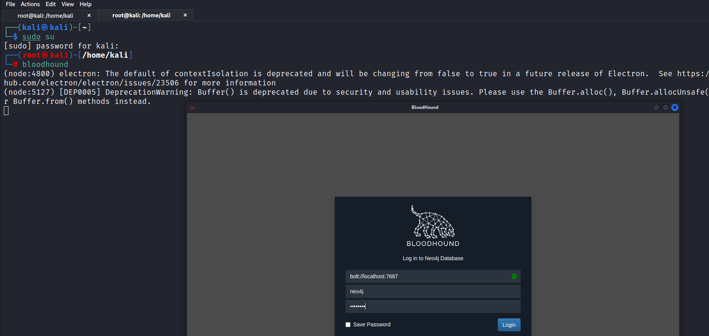

Now we have to download and set up ain Jester there's a few ways that we can do this.
- Invoke Bloodhound from Power Shell
- Tool called Sharp pound written in C sharp
Search Invoke-Bloodhound github in google
https://github.com/BloodHoundAD/SharpHound3
https://github.com/BloodHoundAD/BloodHound/blob/master/Collectors/SharpHound.ps1
Note all the 4 machine's should be running at this point (i.e. Windows Server and 2 Windows Pc along with Linux)
Simply copy and SharpHound.ps1 in The Punisher aka Frank Castle PC and run the script
Command:. .\SharpHound.ps1
Command: Invoke-BloodHound -CollectionMethod All -Domain MARVEL.local -ZipFileName file.zip
Simply copy the zip file in User's windows and than move it into Kali



We have downloaded the .exe file and run it but before we do that make sure that the anti-virus is set to off.